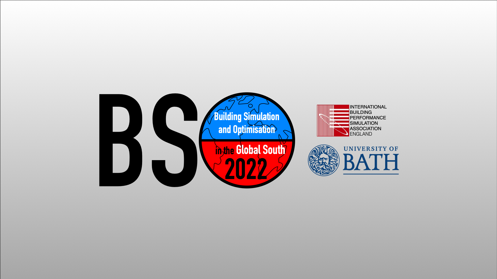

The Global South alone is expected to nearly double current global built floor space by 2050, driven primarily by growth in urbanisation. A typical building lasts 60 years and we spend about 90% of our lives in them. This means that buildings built now will have an impact on carbon, energy and health well into the 2080s.
Hence, we need to design buildings in the Global South to be carbon, energy and health optimised from the get-go. But first there are significant challenges to overcome around equity, access, localisation, fitness-to-purpose, cultural sensitivity and cost. This conference will provoke thought and gather knowledge on how we can address these challenges at scale and with speed.
| Call for papers: | December 2021 |
| Abstract submission deadline: | 1 February 2022 |
| Full paper call: | 15 February 2022 |
| Full paper deadline: | 15 June 2022 |
| Reviews: | 15 July 2022 |
We want to encourage more research-active academics and research students from the Global South to take part in our conference. We're achieving this through:
We invite papers on the following:
Dr Sukumar Natarajan will moderate an Oxford-style debate where speakers will argue for and against the motion 'Building energy modellers are not literate.' Using audience polling, we'll measure audience sentiment before and after the debate to judge which side moved the most people and won the debate.
We want our delegates to have plenty of opportunities to engage with each other and the speakers at the conference. We are working on making sure the online experience supports networking to foster new research collaborations across the globe.
We plan to showcase key outputs from a series of high-profile research grants awarded under the Newton Fund between researchers in the UK and India. This will show what is achievable using effective collaboration between the Global North and the Global South.
You can submit an abstract at Easychair Smart CFP. You will need to register or sign in to do so.
Key dates: